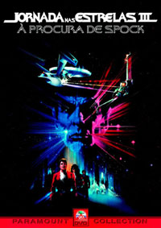
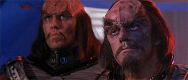
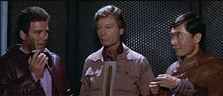
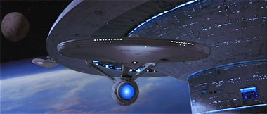

|
Por Luiz
Felipe do Vale Tavares
O
Filme
 A
tripulação da Enterprise sai em busca do corpo de Spock,
presumivelmente morto no filme anterior, mas ressuscitado pelos
efeitos do planeta Genesis. Muitos fãs consideram esse terceiro
filme como um dos mais fracos da série. O problema é que,
comparado com o ótimo filme anterior, “A Ira de Khan”,
o terceiro é mesmo muito inferior. Mas inferior não quer dizer
necessariamente ruim. Ruim mesmo é só o filme V. Os filmes I,
III, Generations e Insurreição
não são exatamente ruins, mas sim insatisfatórios. “À
Procura de Spock” é uma boa aventura e um excelente
passa-tempo. É um típico filme de ficção dos anos 80. Há
vilões maus (os Klingons, pela primeira vez como vilões em um
filme de Jornada para o cinema), um planeta inóspito, naves de
maquetes (viva as maquetes! Fora as naves CGI), lutas braçais
entre o herói e o vilão etc.

Para o universo de Jornada
nas Estrelas este filme contribuiu com vários aspectos:
aprofundamento na cultura Vulcana, mais detalhes do próprio
planeta Vulcano, a primeira aparição da USS Excelsior, a
primeira aparição da nave de rapina Klingon, a destruição da
Enterprise e a morte do filho de Kirk. Ele traçou parâmetros no
universo de Jornada que são seguidos até hoje nas novas séries
e filmes para o cinema.
A trilha sonora de James Horner é exatamente a mesma do filme
anterior, com alguns novos arranjos. A trilha é ótima, mas passa
uma sensação de repetição se assistirmos o terceiro filme logo
após o segundo. Os efeitos especiais da Industrial Light &
Magic (ILM) são inferiores aos efeitos do segundo filme e muito
inferiores em relação ao primeiro. Nota-se que caíram de
qualidade filme após filme ao invés de melhorarem. Mas, de
qualquer forma, ainda há bons efeitos no terceiro filme para
serem apreciados. Vulcano, por exemplo, ficou incrível. O
trabalho de mesclagem da ILM com maquetes e matte-paintings
resultou em belíssimos efeitos, principalmente na cena do altar
em que é feita a restauração da memória de Spock.
Leonard Nimoy se mostrou um bom diretor, sabendo dosar aventura e
humor nas medidas certas e até manter um clima de suspense que
perdura durante o filme inteiro. A Paramount gostou do resultado e
o chamou de volta para dirigir o quarto filme, superior ao
terceiro e considerado um dos melhores da série.

Imagem
Jornada nas Estrelas III foi totalmente remasterizado e o
resultado é incrível. O filme é apresentado em widescreen
anamórfico na proporção de 2.35:1 e temos aqui um maravilhoso
trabalho da equipe da Paramount.
A imagem é fantástica, com ótima nitidez e cores precisas.
Além disso, a película utilizada está em ótimo estado de
conservação, com nenhuma sujeira, sem arranhões e outras
deteriorações devido ao tempo. Há um pouco de granulação em
algumas cenas mais escuras, mas isso é perfeitamente normal em um
filme de quase 20 anos de idade. O destaque fica por conta das
cenas finais em Vulcano, em que o fantástico trabalho nos efeitos
especiais da ILM em “matte-paintings” somada à glória do
formato widescreen e a ótima qualidade de imagem do DVD propiciam
um dos mais belos planetas alienígenas já mostrados no cinema.
Quanto à outros efeitos especiais cabe aqui uma ressalva. Como o
DVD mostra o filme em resolução e nitidez muito superiores ao
VHS, muitos “defeitos especiais” antes ocultos se mostram
agora visíveis demais. Em praticamente todas as cenas em que há
naves espaciais podemos ver o frame da película resultante da
sobreposição de imagens, ou seja, podemos ver o recorte da
película que compõe a imagem das naves. Isso distrai um pouco a
atenção e quebra o clima do filme, pois ficamos prestando
atenção nas imperfeições dos efeitos.

Som
Antes de Jornada III, a Paramount já havia remasterizado o
áudio dos filmes IV e V, mas o resultado, embora satisfatório,
estava longe de impressionar qualquer fã. Isso mudou agora.
Temos aqui um dos melhores trabalhos da Paramount no tocante à
remixagem do som original estéreo para Dolby Digital 5.1. O
áudio é simplesmente arrasador, com ótima resolução e
agressividade. O canal do subwoofer é bem mais ativo do que nos
DVDs dos filmes IV e V, e isso faz uma boa diferença. O melhor
exemplo é a cena da primeira aparição da nave de rapina Klingon
que faz a sala inteira tremer.
Quanto aos canais surround, nos DVDs dos filmes IV e V eles eram
usados basicamente para realçar a trilha sonora. Agora neste
disco esses canais são mais ativos e muitos efeitos sonoros são
redirecionados a eles, criando uma ambientação mais realista,
principalmente na cena da destruição do Planeta Gênesis.
Extras
O único extra é o trailer original de cinema, em widescreen
anamórfico e com som mono. Faz anos que nenhum fã via esse
trailer, provavelmente desde a exibição nos cinemas em 1984. Por
isso é bem vindo.
A Paramount está trabalhando, nos EUA, em uma edição especial
de Jornada III com vários extras como documentários,
entrevistas, áudio com comentários etc. A previsão de
lançamento é 22 de outubro deste ano. Aqui no Brasil ainda não
há previsão de lançamento deste disco especial.
Conclusões
Um bom filme de
Jornada em um ótimo DVD nos quesitos som e imagem. Ficou devendo
quanto aos extras, mas há uma edição especial sendo preparada
nos EUA. Aí fica uma dúvida, comprar a edição simples ou
esperar a edição especial ?
Quem já comprou a edição especial nacional do primeiro filme
comprovou que a Paramount sabe muito bem o que os fãs querem,
pois a quantidade e qualidade dos extras é nota 10.
A edição especial do segundo filme, já lançada nos EUA, embora
não tão completa como o DVD do primeiro, também é de excelente
qualidade e traz ótimos extras. Tudo indica que a edição
especial do terceiro também não decepcionará.
A melhor indicação é esperar a edição especial, pois
certamente será lançada aqui no Brasil embora possa demorar
algum tempo. Quem comprar agora certamente ficará tentado a
comprar a edição especial, gastando mais uma vez com um mesmo
produto e alimentando a ganância da Paramount brasileira que tem
a cara de pau de lançar a edição simples por aqui sabendo que
há uma edição especial no forno.
Obs: Só faltava agora a Paramount lançar no Brasil a edição
simples do segundo filme quando já existe uma edição especial
circulando no exterior.
Ficha Técnica
Extras:
Menu interativo, Seleção de Cena e um trailer de cinema
Vídeo:
Widescreen (2.35:1)
Áudio:
Inglês (Dolby Digital 5.1 Surround)
Legendas:
Inglês, Português e Espanhol
Ano de produção:
1984
Duração:
105 minutos
Data de Lançamento no Brasil (Região 4)
24/09/2002
|